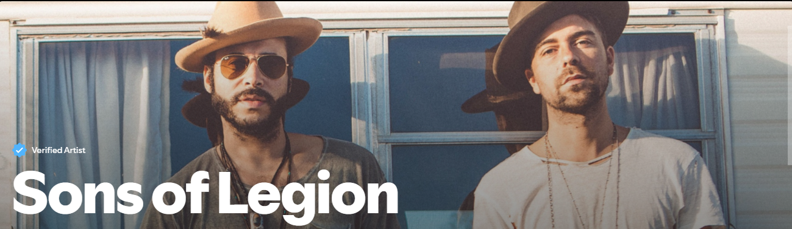
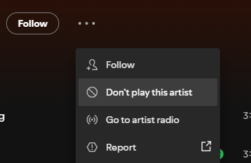

I’m usually pretty excited about AI and more specifically about Generative AI, especially with Microsoft Copilot, GitHub Copilot and Microsoft Foundry. I might be biased, but outside of my professional interactions with GenAI, I’m not into all the social media hypes around it (anyone remembers the Studio Gihbli hype from summer or any similar?)
With a few days off for Thanksgiving here in the USA, I wanted to spend a bit more time on updating my Spotify playlists. While not always perfect, at least a few of the ‘recommended artists’ are closely in line with the artists and songs I like.
The search for new sounds
I always enjoyed listening to music, and exploring new artists. I remember as a kid going to the music store, buying LPs, and later on CDs. And honestly, I discovered several new great artists thanks to Spotify. There’s a special thrill in discovering new music. For now, it started with a simple quest: I wanted to explore the country blues rock corner. Think soul, whiskey bars, gritty guitar riffs, and that raw energy that bridges the rural blues tradition with rock’s rebellious spirit. It also brings back great memories to House of Blues during work travel trips.
I actually discovered Sons of Legion recently, which offers a unique mix of authentic soul, folk and rock music, as they describe it themselves.

So I dove in. I let Spotify’s recommendation engine guide me, clicking “like” on songs that resonated, building a playlist over the course of a week. The algorithm seemed to understand me well. The tracks had the right vibe: swampy slide guitar, stomping rhythms, smoky vocals. I was hooked.
The nasty suprise of discovery
But then came the surprise. As I looked closer at the artists behind these songs, something I usually do to learn more about what got them into the music scene, where they are from, what other albums do they have,… I realized something interesting: One of the artists was an AI-generated artist: Breaking Rust.
Yet, Spotify flagged them as verified artist.
At first, I thought I had stumbled upon obscure musicians from small towns or indie labels. Their names sounded authentic (), their album covers, while only showing drawings, they looked convincing, and the songs fitting perfectly in the genre. But maybe a bit too perfect? After I couldn’t find much information on the artist or the band. These “artists” had no social media presence, no live performances, no interviews. Instead, they were products of AI music generation platforms, uploaded to Spotify (and basically any other music streaming platform…) under artificial identities.
My GenAI dilemma
Here’s the paradox: I genuinely enjoyed the songs. They had groove, soul, and typical blues/bluesrock themes. Yet knowing they were AI‑made changed my experience. I felt betrayed.
Questions coming to mind:
- Was I connecting with art, or just with a clever simulation?
- Does it matter if the music moves me, even if no human created it?
- What happens to real musicians struggling to get noticed when AI and AI artists flood the market with endless tracks?
And the most important question: would I continue listening? And from there, would I need to do a thourough research on any new artist I get recommended or discover on my own, to check if they are real?
My Personal Reflection
After the initial shock, I couldn’t keep listening; I removed the full playlist - and flagged to no longer play the artist.

Some AI tracks still made it into my playlists. But I also made a conscious effort to seek out real musicians — artists with biographies, live shows (and buying tickets for some!!), and human voices.
I realized that part of the joy of music discovery is not just the sound, but the story behind it. Which - for me - adds depth and meaning to the listening experience.
AI can mimic the sound, but it can’t replicate the story. And my interest for GenAI got a little punch today :/
Btw, if you know any real, raw, blues/bluesrock artists, please let me know! I am still in search of some new groups to listen to…

Cheers!!
/Peter